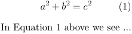

Contents
Summary
The environment \startplaceformula ... \stopplaceformula is used to place a formula, optionally numbered and captioned. NOTE: unlike many \startplace... commands, this one does not create an object that floats.
Settings
| \startplaceformula[...=...,...] ... \stopplaceformula | |
| title | text |
| suffix | text |
| reference | + - reference |
| Option | Explanation | ||
|---|---|---|---|
| title |
|
||
| reference |
|
||
Settings argument
Description
Within the \startplaceformula ... \stopplaceformula environment, the display math environment \startformula ... \stopformula is also necessary.
Examples
Example 1
This example shows that with \startplaceformula an equation number is added, and that a refererence can be created.
-
\startplaceformula[reference=eqn:Pythag] \startformula a^2 + b^2 = c^2 \stopformula \stopplaceformula In \in{Equation}[eqn:Pythag] above we see ...
-
